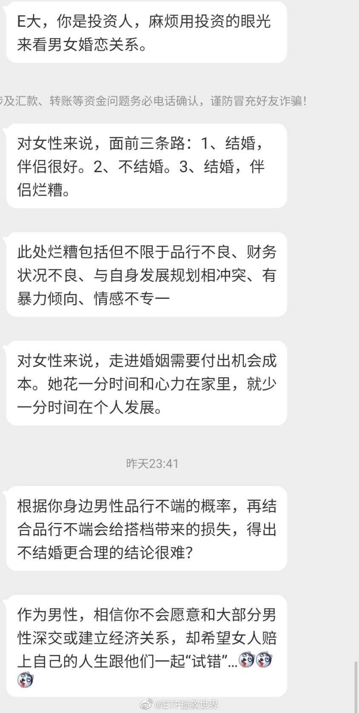
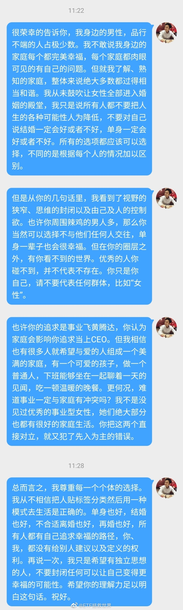
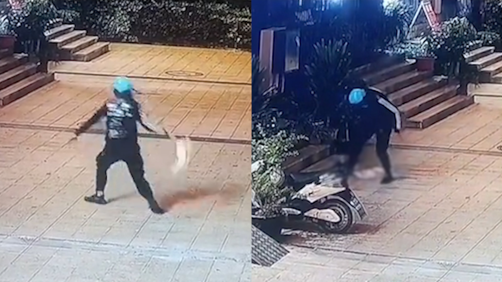

确实烦。不说了。你们折腾吧。祝所有人幸福。PS，千万千万不要与自己三观不一致的人结婚，会夭寿。这个角度的话，单身真的很好，至少不会早死。PPS，每次这样的事情过后，我家的爱情浓度就又上升8%。现实真的太美好了。
回复@数不清的咩:凭什么一定是女性做家务？谁有空谁做，大家分担啊。强制女性做家务的男人让他滚蛋。//@数不清的咩:看地方，看人，我曾经跟我一个北方朋友聊起来，说我们这儿女性不做家务是不可能的，他不信，直到有一天他亲眼看到一个老公因为老婆不做家务而动手，这对夫妻还是90后。@ETF拯救世界:关于昨天的微博，一位女性博友的私信，以及我的回答。你觉得我说的对吗。 
一开始小猫那么信任他@新浪新闻:【气愤！#外卖骑手当街拎起小猫反复狠摔踩踏#】10月23日，广东。一名戴蓝色头盔的男子看到一只小猫，主动示好抚摸，随后画风突转，男子抓住小猫尾巴开始反复砸向地面，猫咪被摔3次后开始痛苦抽搐，然而男子再次进行补刀，见猫咪还有反应，竟直接用脚反复踩下，随后淡定的离开现场。喂养过小猫的街坊查监控后怒指男子是饿了么的骑手，并马上报警。网友看到后怒评：不爱请别伤害。星视频的微博视频 1140万次播放 01:14